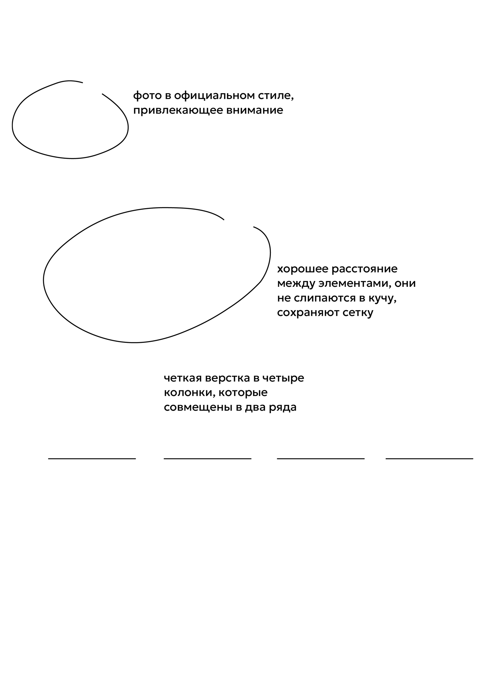

О нас
Руководство
Библиотека
Шаблоны
← Все плакаты
←Предыдущий

Данный постер отличается оригинальной композицией. Элементы выстроены по сетке, но при этом используются нестандартные формы и цветовые решения. Заголовки и графики хорошо видны, а текстовые блоки лаконичны и информативны.